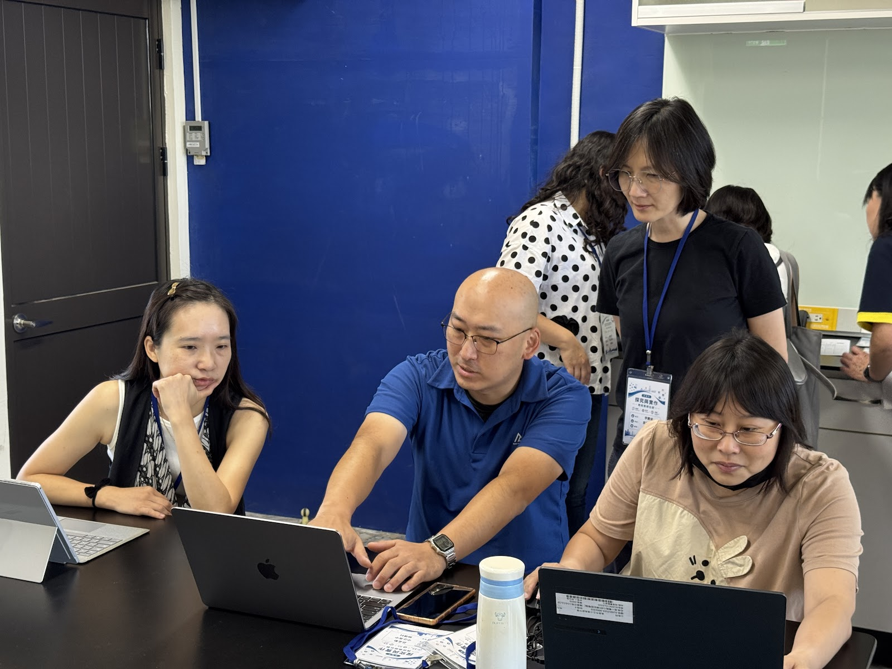
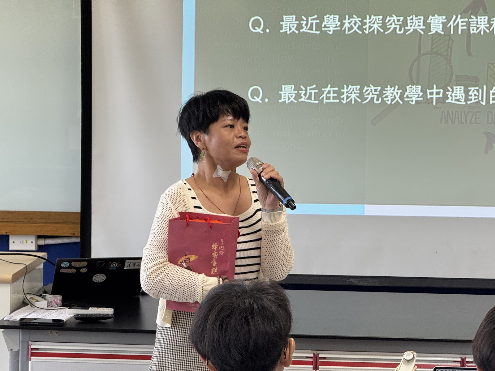

Resource Hub
把資料整理好，
才能讓協作走得更遠。
網站不只要好看，更要好用。資源專區的角色，是協助社群把共備過程中的資料、工具與成果整理成清楚、可重用、可持續維護的知識入口。
目前先把資料庫角色說清楚：未來應集中會議紀錄、共備版本、簡報與工作文件；待補正式雲端連結與公開權限後，再轉成跨校同步的主要入口。
目前先標示工具包應整理的範圍：探究提問模板、任務單格式、rubrics、反思表與學生表達框架；待補授權檔案後，再提供教師備課與帶課時取用。
先以已授權可公開使用的工作坊照片、分類圖說與活動脈絡，整理出共備現場、同儕協作、工具實作與成果分享等可累積素材。
目前先保留導引架構；待補參與流程、資料位置、活動規範與成果整理規則後，可協助新加入夥伴快速理解社群如何運作。
這些不是立即公開下載的內部檔案，而是網站後續最值得整理成模板與資源包的項目。
目前先整理可公開說明的欄位方向：任教探究年資、任教科目、參與研習經驗、可分享課程亮點、目前困擾、希望獲得協助或資源。待補正式表單連結與可公開欄位後，可轉為新成員加入前的需求盤點入口。
目前先標記回饋表應收集的重點：未來社群需求、可能分享者與主題、活動形式回饋。待補實際表單版本、開放對象與回收規則後，可讓每次聚會都長出下一次方向。
目前只保留題庫分類線索，如樣本數太少、A 類不確定度、資料分析路徑、論證品質等。待補題目授權、年級／單元與是否可公開後，再整理為可下載或可引用的共備素材。
目前先列出準備向度：講師對口、流程確認、設備、名牌、簽到、海報、餐點、公文、研習時數與攝影紀錄。待補社群實際分工與時間節點後，可轉成活動承辦檢核表。
為避免資源專區只留下空泛佔位，以下先把尚未確認的入口標成「待補」，並說明補上後的用途。後續取得正式連結時，可直接替換成按鈕或下載入口。
需要補上工作坊報名表、研習回饋表或社群加入表單的正式網址；補齊後可成為新成員與活動參與者的第一入口。
需要補上可公開或需授權的共備文件、簡報、教材包與成果檔案位置，並標明哪些適合對外公開、哪些僅供社群內部使用。
需要確認哪些活動照片、簡報截圖、學生發表紀錄或訪談摘錄可公開；在授權與來源未確認前，本頁只引用既有照片分類，不預設一定會有外部媒體平台。
資源專區不只放連結，也要說明資料如何在共備現場被閱讀、操作與整理。以下先選用既有相簿中的三種公開安全情境，協助讀者理解「資源」與實際教學協作的關係。

筆電與討論同時出現，呈現教師如何在現場查找、整理與修正課程素材。

資源若要被持續使用，需要在現場被測試、提問與調整，而不只是放在雲端資料夾中。

分享與提問可以回流到表單、模板與教學工具包，形成下一輪共備的起點。
在正式表單、雲端資料夾與更多公開素材補上之前，網站目前已經可以先提供六份整理完成的核心內容，避免資源專區只停留在待補清單；其中三份屬於「關於社群」延伸閱讀，兩份接到成果與活動脈絡，一份則作為主題特輯。
適合讓第一次接觸這個社群的讀者快速理解：這個社群是怎麼從協作需求與活動脈絡中慢慢長出來的。
適合作為內部共識整理與外部交流說明，協助讀者看見這個社群如何把理念轉成可持續運作的方法。
把社群需求、參與方式與公開安全邊界整理成可閱讀的原則，適合放在「關於社群」底下作為深度補充，而不是主導覽入口。
已先把可公開使用的工作坊照片整理成共備現場、同儕協作、工具實作、成果分享等分類，方便日後補入更多活動素材。
保留年度推進節點、活動節奏與共備脈絡；適合需要看時間軸的讀者，但不取代成果與活動主頁。
已先把 AI agent × 物理教學的教師工作流主張、共備應用情境與優先題目整理成公開特輯，方便後續接上真實教材、工具流程與活動紀錄。